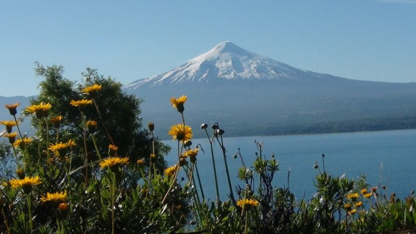
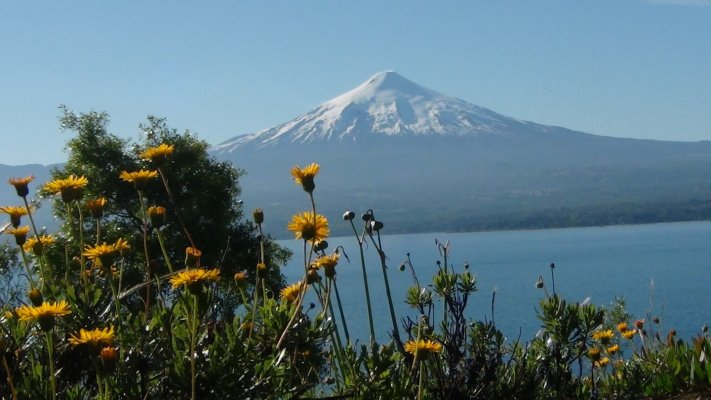
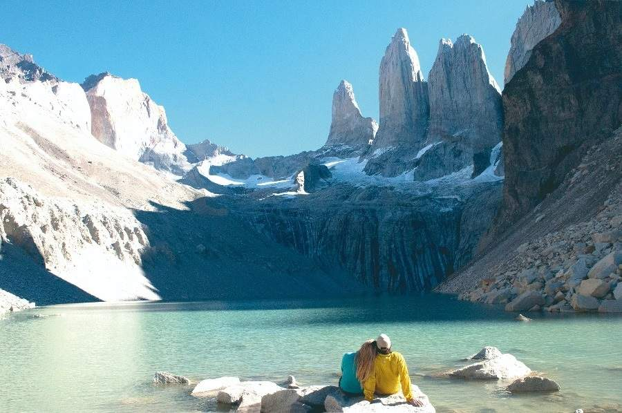
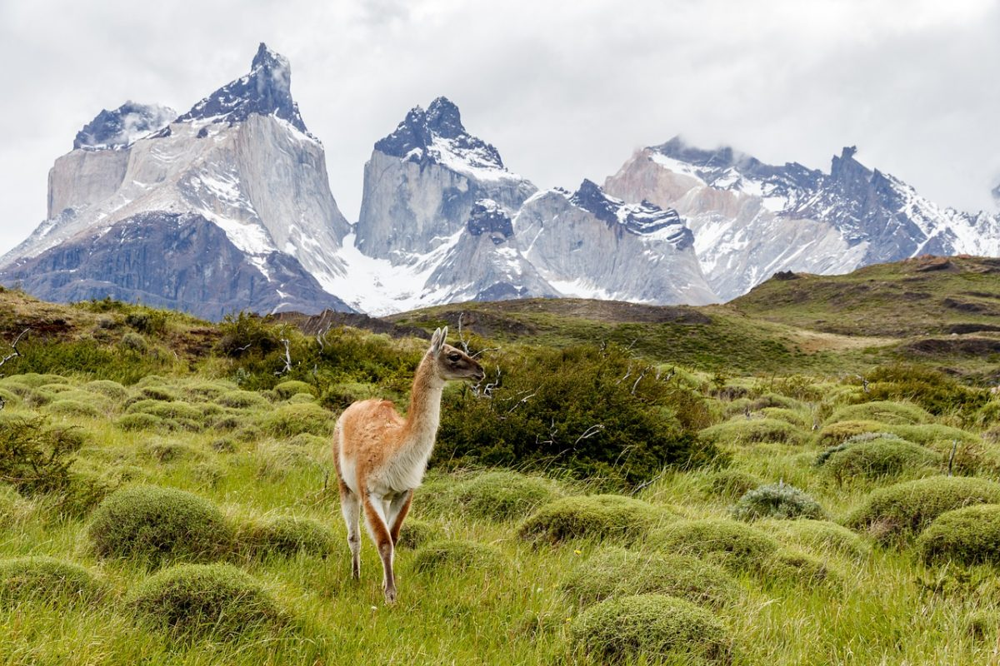
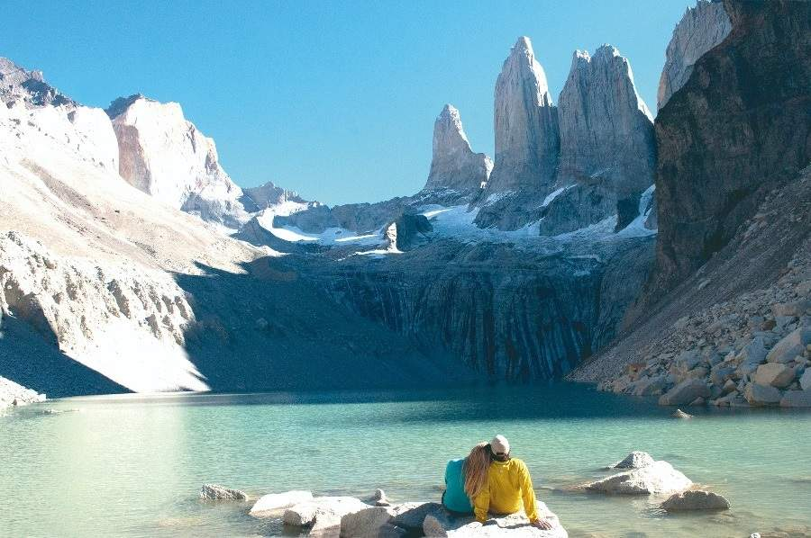
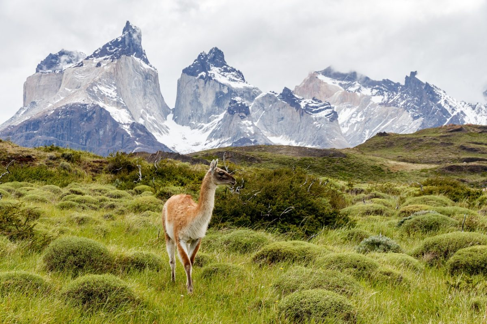

Villarrica
El mejor destino para los sibaritas y amantes del aire libre. Mezcla perfecta entre buena mesa y paisajes escénicos. Degustarás platos que rescatan lo mejor de la cocina autóctona mapuche junto al dulzor de los dulces alemanes. Vive intensos días, con la amplia oferta de restoranes, ferias, mercados y casinos de juego. Toma un descanso y relájate en sus centros termales de tibias y sanadoras aguas que revivirán tus sentidos.
Practica rafting, canopy, canyoning y trekking entre sus magníficos volcanes, ríos y lagos. En las empinadas pistas de sus montañas disfruta del snowboard. Recorre sus Parques Nacionales y disfruta de milenarios bosques de araucarias y el suave silbido de aves. Fotografía la fauna autóctona y enamórate de especies únicas como el monito del monte o el pudú.
 



Torres del Paine
Ubicado al fin del mundo en la asombrosa Patagonia chilena, el Parque Nacional Torres del Paine, declarado como Reserva de la Biósfera por la UNESCO y la 8ª Maravilla, es un mundo de contrastes únicos. Sus montañas en forma de torres ocultan lagos color turquesa, bosques de hojas perenne e inmensos campos de hielo.
Los glaciares de la Patagonia han ido moldeando paulatinamente el escarpado paisaje con el pasar de millones de años, avanzando lentamente desde Campos de Hielo Sur que bordea el parque hasta el noroeste. Es la parte más grande de capas de hielos de la Patagonia que originalmente cubría todo Chile meridional. Este proceso de erosión glaciar es evidente dondequiera que mires, ya sea en sus profundos valles, en los lagos glaciares de color turquesa, en los glaciares que cuelgan de las cumbres puntiagudas que yacen poderosamente en frente de montañas coronadas de nieve y en el diverso ecosistema que se desarrolla en el Parque.

Chiloe
Tierra de mitos, leyendas, tradiciones y una gastronomía incomparable. Chiloé es una isla de sorprendente riqueza cultural y natural. Descubre sus pintorescos palafitos, coloridas casas construidas sobre el agua y disfruta de la compañía de sus cálidos habitantes. Explora su mítico territorio, coloridas iglesias de madera, 16 de las cuales fueron declaradas Patrimonio de la Humanidad por la UNESCO.
Prueba el tradicional curanto, preparación de mariscos y otros ingredientes como la papa chilota, cocinados en un hoyo con piedras calientes. Y si de naturaleza se trata, esta isla te regala cinematográficos paisajes. Recorre las diversas rutas de trekking y navega en kayak por sus maravillosos canales. El Parque Nacional Chiloé y Tantauco te atraparán con sus colores siempre verdes.